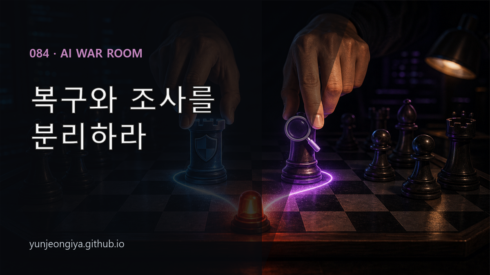
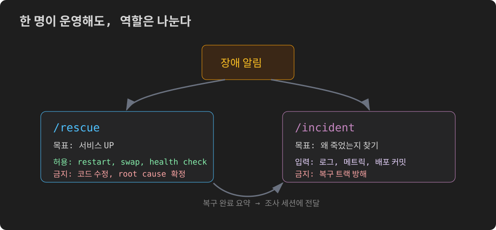
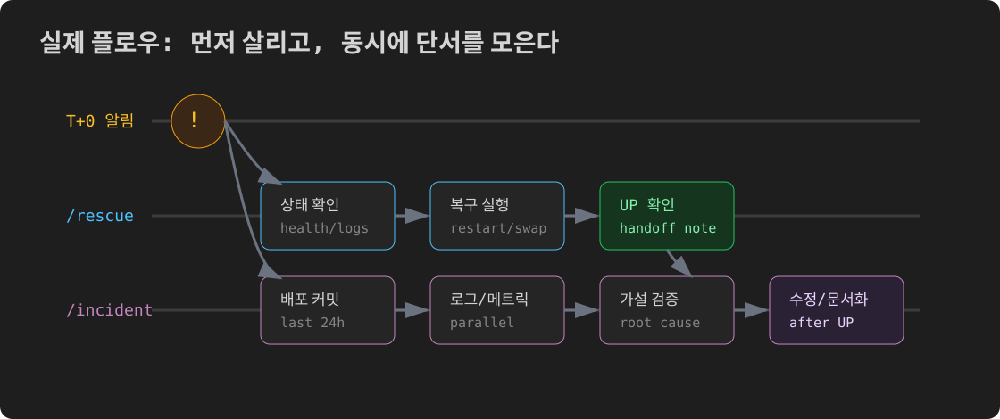

이 글은 블로그에도 공개할 예정입니다.

서버가 죽었다. 혼자다. 지금 당장 살려야 하는데, 왜 죽었는지도 알아야 한다.
이 두 가지를 동시에 하려고 하면 둘 다 느려진다. SRE 팀이 있는 조직은 "war room"을 연다. 복구 담당, 조사 담당, 커뮤니케이션 담당을 분리한다. 혼자 운영하면서도 비슷한 구조를 만들 수 있었다 — AI 세션 두 개로.
Google SRE 책에는 incident 대응의 핵심 원칙이 있다. 요지는 먼저 출혈을 멈추고, 서비스를 복구하고, root cause 분석을 위한 증거를 보존하라는 것이다.
이 원칙을 혼자 운영하는 상황에 맞게 바꾸면, 서비스 복구와 원인 조사를 분리하는 쪽이 안전하다.
복구와 조사를 같은 사람이 동시에 하면:
war room은 이 두 모드를 사람으로 분리한다. AI 세션으로도 같은 분리가 가능하다.

Claude Code를 쓴다면 두 세션을 동시에 열 수 있다. 한 컴퓨터에서 두 세션을 돌려도 로컬 CPU에는 부담이 거의 없다. 실제 연산은 Anthropic 서버에서 이루어지고, 로컬에서는 API 호출 프로세스만 돌아간다.
이 세션은 서비스를 살리는 것만 한다.
"서버 죽었어. /rescue"복구 세션이 하는 일:
이 세션은 코드를 수정하지 않는다. 원인도 파악하지 않는다. 서비스가 살아있으면 임무 완료다.
이 세션은 왜 죽었는지를 찾는 것만 한다.
"세션 1이 복구 중. 너는 root cause 조사만. 코드 수정하지 마."조사 세션이 하는 일:
장애 발생 시:
[알림 도착]
↓
세션 1 열기 → "/rescue 서버 살려줘"
↓ (동시에)
세션 2 열기 → "세션1이 복구 중. 너는 조사만. 코드 건드리지 마.
직전 24h 배포 커밋부터 확인해줘."
↓
세션 1: blue-green swap 또는 restart 실행
세션 2: 로그 패턴, 배포 커밋, 메트릭 분석 병렬 진행
↓
세션 1 → 복구 완료 보고 (마지막 에러 로그 포함)
사용자 → 세션 2에 전달 ("세션1 복구 완료. 재시작 전 에러: [...]")
↓
세션 2: 가설 확정 → 수정 구현
두 세션이 같은 코드를 동시에 수정하지 않도록 명시적으로 역할을 알려주는 게 중요하다. 안 그러면 두 세션이 같은 파일을 덮어쓰는 사고가 난다.
처음에는 "복구 세션에서 원인도 같이 파악하면 되지 않나?"라고 생각했다.
실제로 해보니 문제가 있었다. 복구 세션이 빠르게 root cause 가설을 잡고 코드 수정까지 하면:
실제 장애 대응에서 세 번 잘못된 가설을 세웠다:
복구와 조사를 분리하면 조사 세션이 서두르지 않고 단서를 체계적으로 수집할 수 있다.
처음에는 조사 세션도 여러 개 띄우면 어떨까 생각했다. 병렬로 다른 가설을 탐색하게 하면 빠를 것 같아서.
실제로는 독이 된다.
세 가설이 동시에 제시되면, 사용자가 중재를 해야 한다. 이미 급한 상황에서 세 세션의 의견을 종합하는 인지 부하가 추가된다. 가설이 틀렸을 때 "어느 세션 말이 맞나"를 판단하는 것도 사용자의 몫이 된다.
최적 구성: 복구 1개 + 조사 1개.
더 필요하면 조사 세션이 동일 세션 내에서 병렬 tool call을 쓰면 된다.
이 워크플로우를 /rescue와 /incident 스킬로 정리했다.
/rescue 스킬은 복구 전담 체크리스트다:
/incident 스킬은 6개 실제 장애 사례에서 뽑아낸 조사 체크리스트다:
스킬 덕분에 다음 장애에서는 "뭘 먼저 봐야 하지?"를 생각하는 시간 없이 바로 시작할 수 있다.
Anthropic의 Claude Cookbook에는 SRE incident response agent 예제가 있다. PagerDuty webhook → Lambda → Claude API → 자동 분석 → Slack 보고 흐름이다. 완전 자동화다.
현실적인 제약:
지금 구조의 현실: 알림 오면 사용자가 채팅창 열고 → /rescue + /incident 실행. 자동화는 아니지만, 체계화되어 있다.
incident.io의 글에서도 같은 결론에 도달한다:
"Most practical AI SRE deployments run as companions that read, correlate, and draft while a human engineer decides the next move."
읽고, 연결하고, 초안을 쓰고, 사람이 결정한다.
바이브코딩으로 서비스를 운영하는 솔직한 현실이다. 완전 자동화는 아직 멀었고, 체계화된 반자동화로 대응 속도를 줄이는 게 실용적이다.
| /rescue 세션 | /incident 세션 | |
|---|---|---|
| 목표 | 서비스 복구 | root cause 파악 |
| 코드 수정 | ❌ | ✅ |
| 타임라인 | ≤ 10분 | 복구 이후 |
| 결과물 | "서비스 UP" 확인 | 수정 PR + 재발 방지 |
장애가 나면 두 세션을 동시에 열고, 각자 역할만 하도록 명시적으로 알려준다. 그게 전부다.